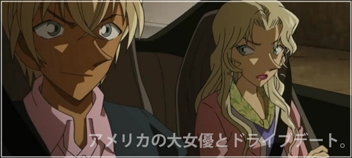
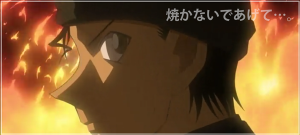

緋色の交錯
ジョディとキャメルは来葉峠へと車を走らせていた。
前日、病院で安室から楠田についての問いに口を紡いだキャメル。
しかし後に来たジョディに「楠田陸道は拳銃自殺したことは言ってない」と話してしまった。
その言葉を聞いたジョディは姿を消し、キャメルは必死にジョディを探す。
すると再びジョディとコナンがキャメルに駆け寄り、楠田の事を話していないかを確認したところ、
「それ、さっきも言ってましたよね…？」と話す。
コナンは、知人を騙せるほどの声色と変装術を兼ね備えた女はたった一人しかいない…と顔を強ばらせる。
安室の車に乗り込んだ彼女は、変装を剥がしながら…
「楠田って男…あなたが予想してた通り…拳銃自殺したそうよ」
事の発端は夏子からジョディへのメール。探偵として依頼を受けた安室は夏子の携帯でジョディに「お酒飲も！」とメールを送信。
ジョディが夏子に電話をするように仕向けるためで、飲み会にしたのは約束は夜だと思わせるため。
さらにジョディの携帯は夜になると電池が切れるためキャメルの携帯を借りて電話するように仕向けた。
すべてはジョディとFBI捜査官を夏子の事件に巻き込ませるためでFBI捜査官なら誰でもよく、たまたまキャメルが巻き込まれた。
夏子が事故に遭えば携帯の履歴からジョディとともにキャメルが呼び出されると考えていたのだ。
全てが安室とベルモットによって仕掛けられた策略だったとコナンは話した。
キャメルがベルモットに話してしまったのは「楠田が拳銃自殺した」という情報。
コナンはジョディの呼びかけが届かないほど、とても動揺していた…。
一方、ベルモットも楠田がなんなのか疑問に思っていた。
拳銃自殺の場合、銃口にこめかみを当てるのが一般的で、弾痕は例え遺体が燃えてもしっかり頭蓋骨に残る、と安室は話す。
「いましたよね？楠田の消息が途絶えた頃…時を同じくして、頭を撃たれて…焼かれた男が…
FBI捜査官…赤井秀一…‼
」
ベルモットはその推理は的外れだと笑う。赤井の遺体の指紋とコナンの携帯に残っていた赤井の指紋が一致し、
赤井の死亡が日本警察によって確認済みだったからだ。
焼死体から指紋が取れた理由として、耐火加工されたズボンのポケットに手を突っ込んだままだったためだと話す。
「そういう男なのよ…ショットガンで私を撃った時も、片手はポケットの中だったし」
しかし、安室は後で指紋が採取できるようにわざと遺体の手を入れていたとも考えられると反論。
ベルモットもまた、赤井が射殺される前に言った「まさかここまでとはな」という台詞は
女優の立場から見ても、心の底から出た言葉で演技ではないと反論する。
まさか…ここまでとはな…
なるほど、そういうことか…」安室は「僕の推理が合っているかどうか証明してみせますよ」とベルモットに告げた。
翌日、コナンは仮病で学校を休み、蘭とマカデミー賞を見る約束もすっぽかして博士の家に泊まりに行ったという。工藤邸でマカデミー賞を見る沖矢の元に「初めましてじゃありませんよね？」と安室が尋ねてきた。
話がしたいと言う安室を、中に入れる沖矢。外で待っているお連れの方はご遠慮願いますと伝えて…。
冒頭に戻りキャメルとジョディは来葉峠へと車を走らせる。
ジョディ曰く、コナンの動揺ぶりに疑問を感じ、「絶対何かある…‼」と確信していた。